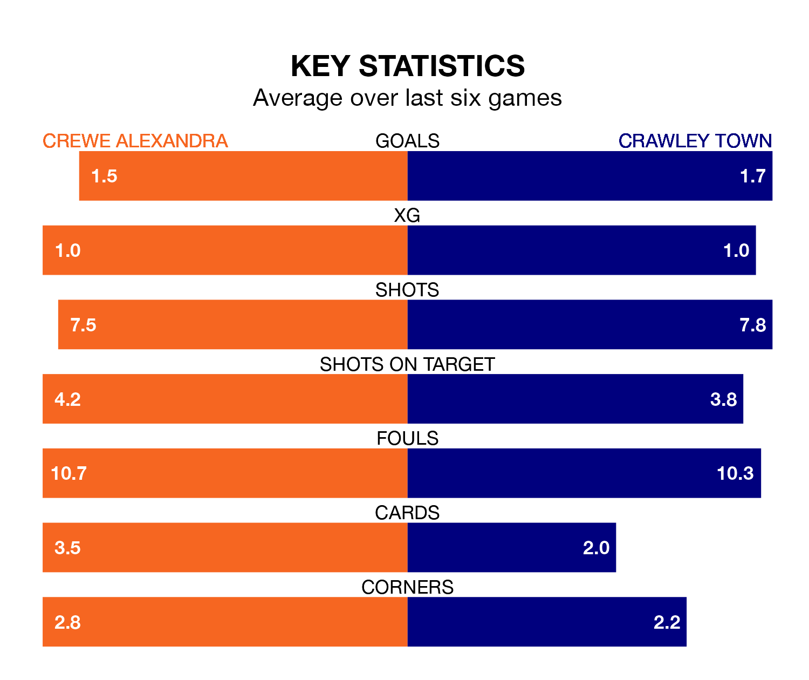

Crewe Alexandra host Crawley Town on Saturday at the Mornflake Stadium in EFL League Two.
In their last league match, on February 3, Crewe drew with Tranmere Rovers 0-0 away.
Crawley lost, 2-1 at home against Morecambe, with Harry Forster scoring their goals.
With 55 goals in 30 games so far this season, Crewe are the league's joint-third-highest scorers with 1.8 goals per game. And they are conceding at an average rate, letting in 44 goals at a rate of 1.5 per game.
Crawley are also above average scorers, with 1.6 goals per game, compared to a league average of 1.5. They have conceded 1.7 goals per game.
In the last 10 years, Crewe and Crawley have played each other on 14 occasions. Crewe won nine of them, Crawley two, and they drew three times.
On average, the Railwaymen scored 2.0 goals and the Red Devils 1.1 in those matches.
Their last meeting was on October 21, when Crewe won 4-2 away.
The Railwaymen are fifth in the table after 30 games, of which they have won 14 and drawn nine, earning 51 points.
Town are nine places behind the hosts in 14th, with 12 wins and three draws putting them on 39 points.
Crewe are in good form in EFL League Two, with four wins and a draw from their last six games.
With three wins and three losses over that period, the Red Devils' form is worse – they have taken nine points from 18, compared to Crewe's 13.
In Danilo Orsi-Dadamo, the away side have one of the league's most on-form strikers so far this season. He has notched 13 goals in 27 appearances, to sit eighth in the scoring charts.
His goal rate of one every 182 minutes is slightly quicker than that of Elliot Nevitt, the Railwaymen's top scorer with a goal every 142 minutes, and a total of 10 goals in 27 games.
Updated: 10:01 (UTC), 06/02/24